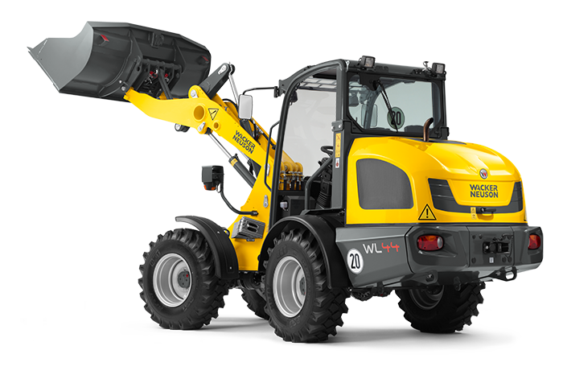

Radlader 5t
Der 5-Tonnen-Radlader eignet sich hervorragend für Erdverschiebungsarbeiten und Materialumschlag. Mit einer robusten Schaufel und hoher Wendigkeit ist er ideal für Baustellen verschiedener Größen.

| Dauer | Preis exkl. MwSt. | Preis inkl. MwSt. |
|---|---|---|
| 1 Tag | 117,00 € | 139,00 € |
| 1 Woche | 467,00 € | 556,00 € |
| 1 Monat | 1260,00 € | 1499,00 € |